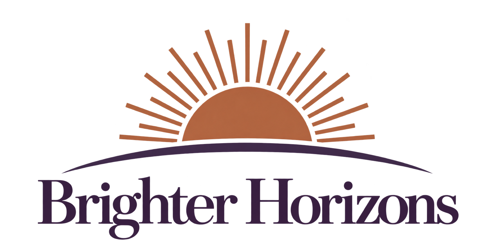

A brighter horizon.
The original sunrise direction, with a solid copper sun, radiating rays, and a continuous plum horizon.



The website uses a compact version of the sunrise symbol for navigation and the browser icon.
The original sunrise direction, with a solid copper sun, radiating rays, and a continuous plum horizon.

The website uses a compact version of the sunrise symbol for navigation and the browser icon.